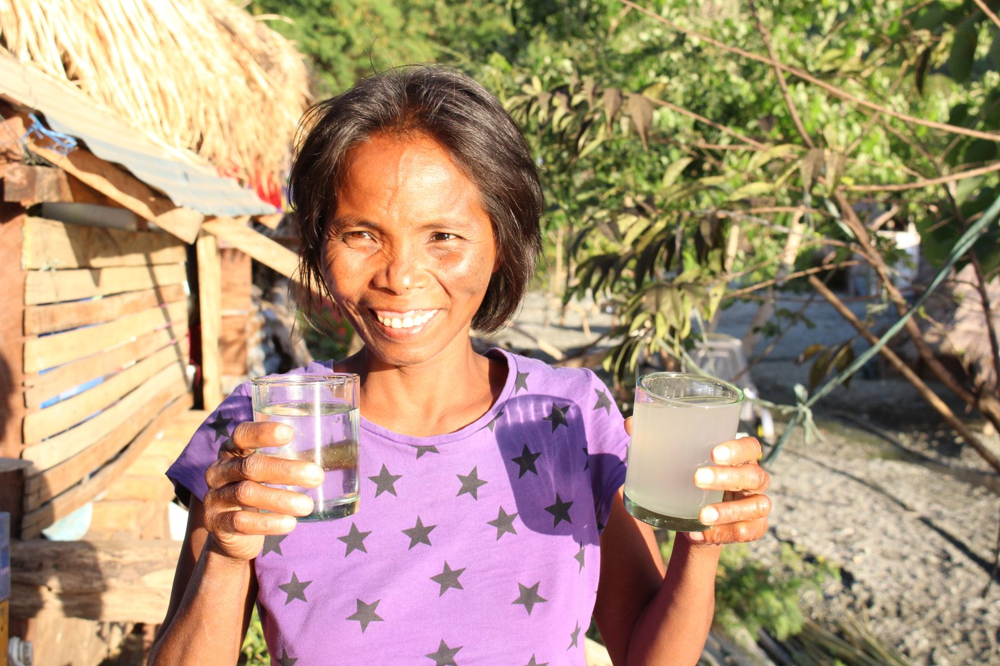
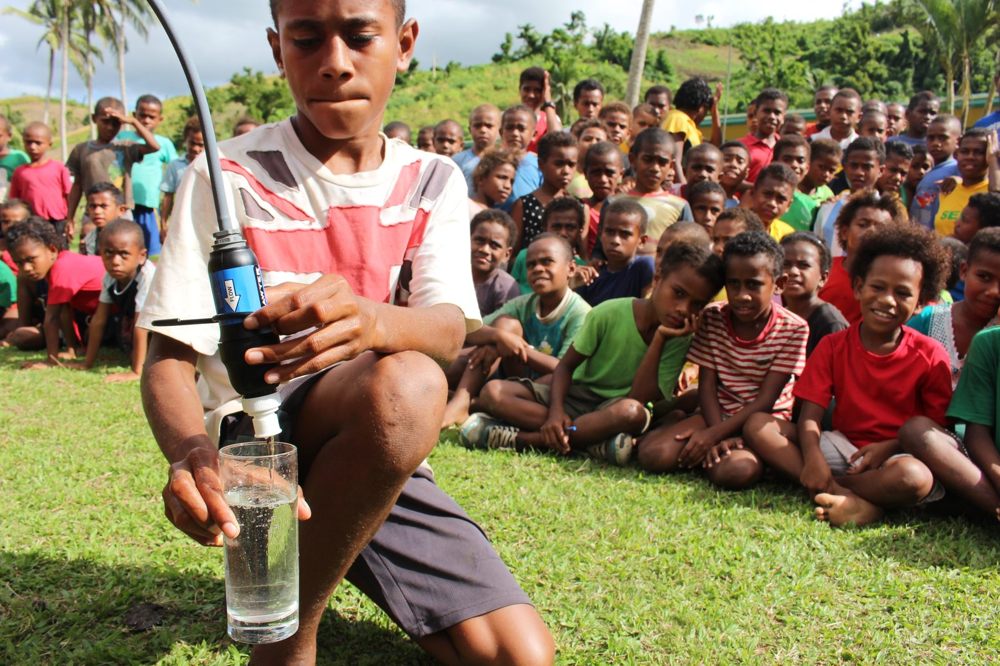
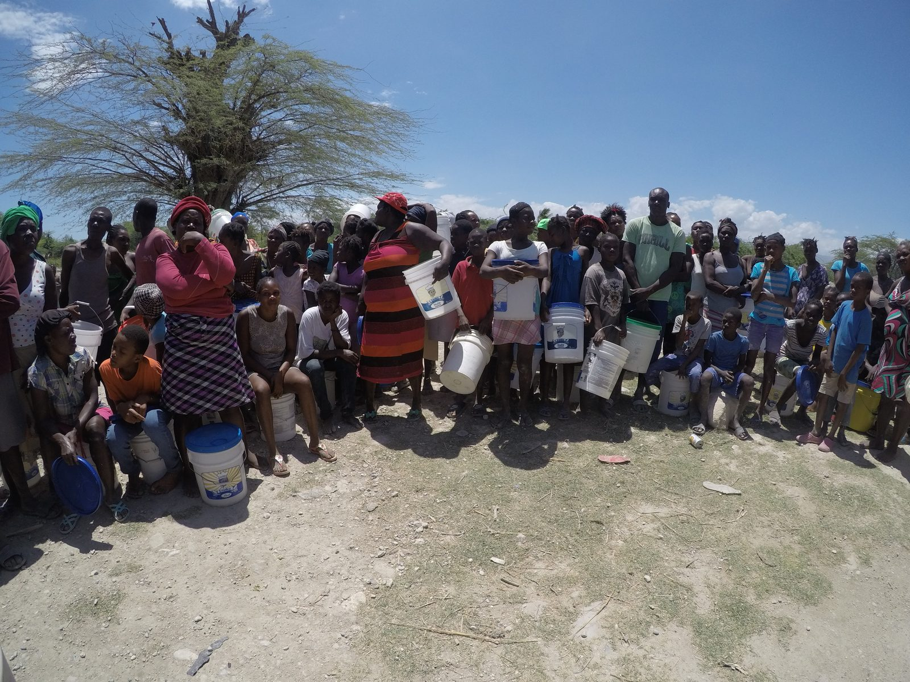
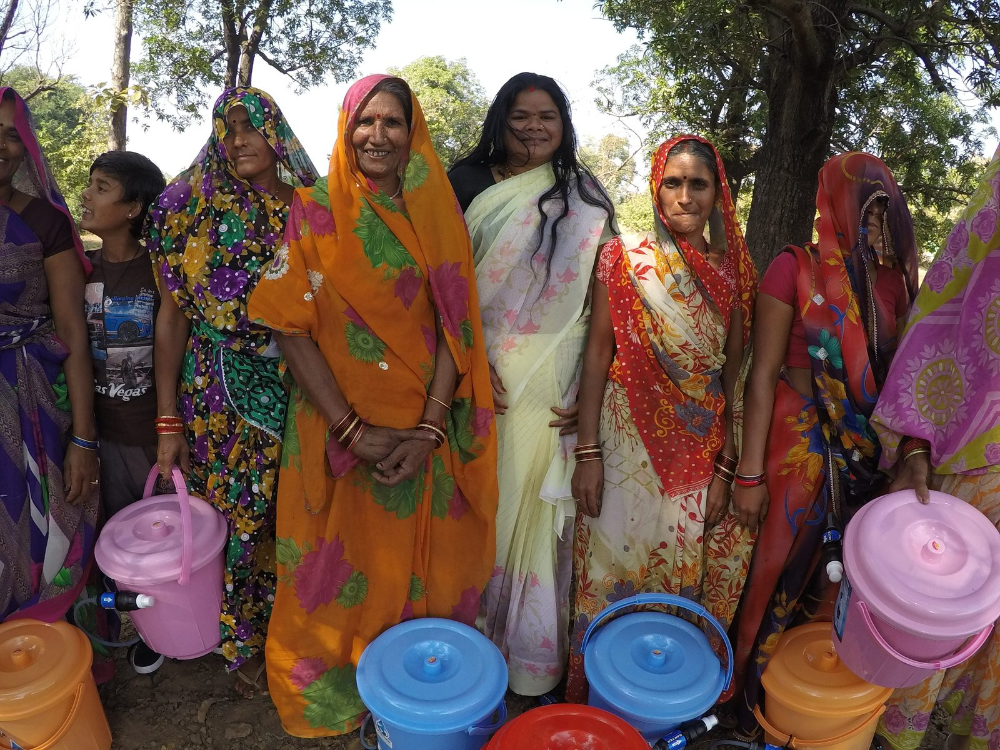

The Walk
Families carry water for miles because access is not close enough — time that could go to school, work, and family.
WVTR brings clean drinking water to communities through real-world projects, humanitarian partnerships, and sustainable water access.
Water affects health, hygiene, education, safety, opportunity, and time. When clean water becomes accessible, everything around it begins to change.

In one hand, clean water from a filter. In the other, the water families drink every day. WVTR closes that gap — filter by filter, well by well.
Families carry water for miles because access is not close enough — time that could go to school, work, and family.
Every day, communities lose hundreds of millions of hours collecting water — hours that nearby access gives back.
Contaminated water spreads illness that keeps children out of school and families out of work. Clean water breaks the cycle.
Clean water should be close, safe, and reliable. Reliable access is the foundation everything else is built on.
Your gift funds filters, well repairs, storage tanks, and field operations — going directly to the communities that need it.
WVTR is a registered 501(c)(3) — donations may be tax-deductible.
Vital Lyfe is WVTR's partner brand — [add a sentence or two on who they are and how the partnership funds clean-water work]. Every Vital Lyfe purchase helps put clean water in the hands of families who need it.
Learn about Vital LyfeEvery project is real, built with local partners for lasting water access. See past projects →

Sawyer filtration demonstrated for the whole community — clean water at the source.

Restoring safe water and distributing storage to families across communities.

Bucket filtration systems delivered to families for safe water at home.